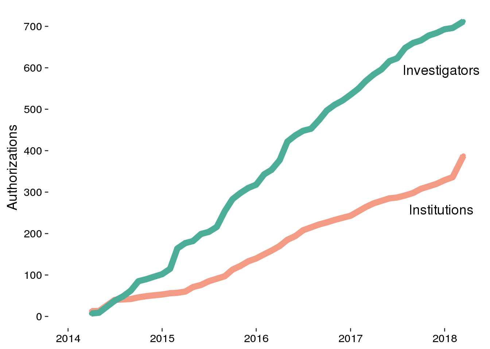

This document contains data and graphs related to Databrary institution and user growth.
#Load Libraries
library(ggplot2)
library(reshape2)
library(dplyr)##
## Attaching package: 'dplyr'## The following objects are masked from 'package:stats':
##
## filter, lag## The following objects are masked from 'package:base':
##
## intersect, setdiff, setequal, unionlibrary(knitr)
library(cowplot)##
## Attaching package: 'cowplot'## The following object is masked from 'package:ggplot2':
##
## ggsaveHere we import the data file found in csv/institutionAuthCounts.csv, include YearMonth, Institutions, and Authorized Investigators in dataframe (df).
# Import data and clean
df <- read.csv(file = "csv/institutionAuthCounts.csv", header = TRUE)
# Remove extra characters from df$YearMonth
df$YearMonth <- as.Date(substr(df$YearMonth, 2, 11))
df$Year <- substr(df$YearMonth, 1, 4)
df$Month <- as.numeric(substr(df$YearMonth, 6, 7))Here we plot all authorized Institutions and Investigators vs. date. I used https://www.hexcolortool.com to saturate the Databrary colors (“#fadbc7”, “#b2ddd4”) so they are darker on the graph.
# Plot for all Institutions and Authorized Investigators vs. date
# the below code needs to be changed to geom_line
# Reshape df
df.melt <- melt(df, id = c("YearMonth", "Year", "Month"), value.name = "Count", variable.name = "Type")
# Using Points
p <-
ggplot(data=df.melt, aes(x = YearMonth, y = Count, color = Type, group = Type)) +
geom_point() +
geom_line(size=3) +
theme_classic(base_size = 14) + #Axis Label Size
scale_colour_manual(values=c("#ec7751", "#4CAE99")) + #Saturated Databrary Colors
ylab("Authorizations") +
#xlab("Year") +
#labs(title="Databrary User Growth") +
theme(axis.title.x=element_blank()) +
theme(legend.position="none", axis.text = element_text(size = rel(0.8), colour = "black")) + #Axis text size and color
theme(axis.line = element_blank()) +
scale_y_continuous(breaks = seq(0, 700, 100), expand = c(0,0)) +
coord_cartesian(ylim = c(0, 730))
ggdraw(p) +
draw_label("Investigators", colour = "#4CAE99", .9, .8) +
draw_label("Institutions", colour = "#ec7751", .9, .38)## Warning: Removed 6 rows containing missing values (geom_point).## Warning: Removed 6 rows containing missing values (geom_path).